England
October 18–25, 2018

From October 18 to 25, 2018 we traveled in England with George Sr, Theresa, Trish, Jessica, and Jasmine.
Stops included Stonehenge, Wells Cathedral, the Roman Baths in Bath, and London — Buckingham Palace, Westminster Bridge, Tower Bridge, St. Paul’s, and Hamleys.


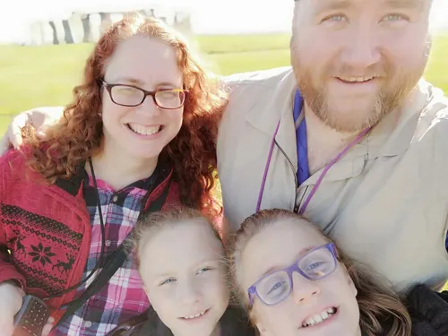

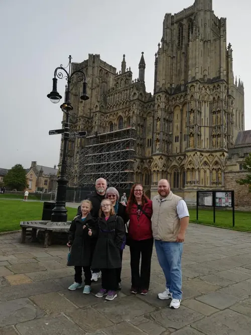

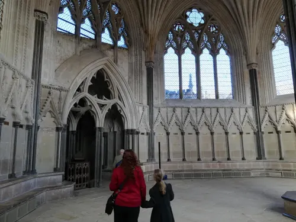

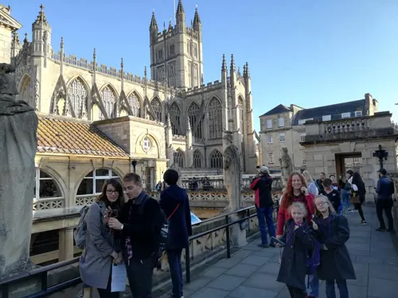

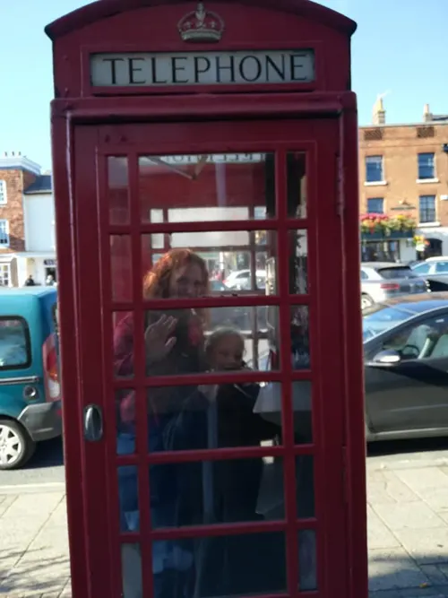

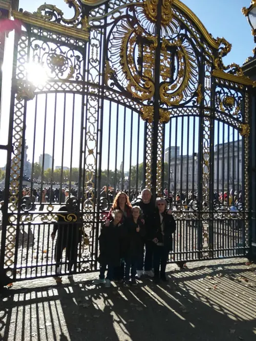

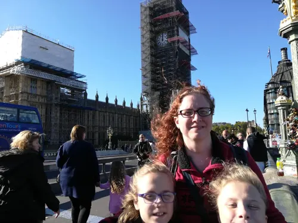

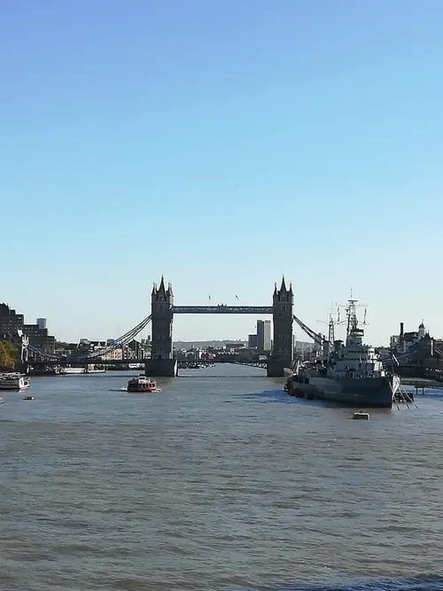

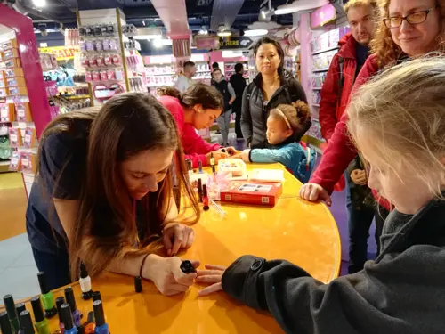

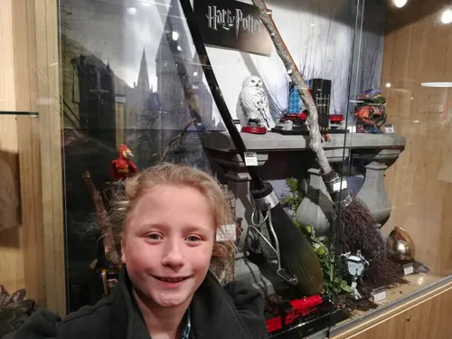

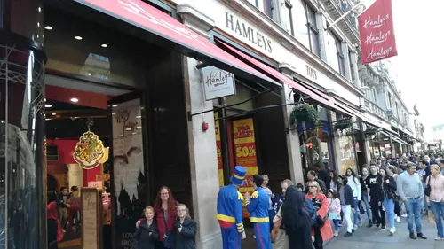

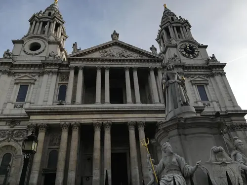

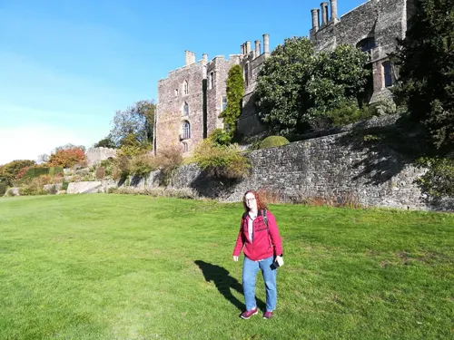